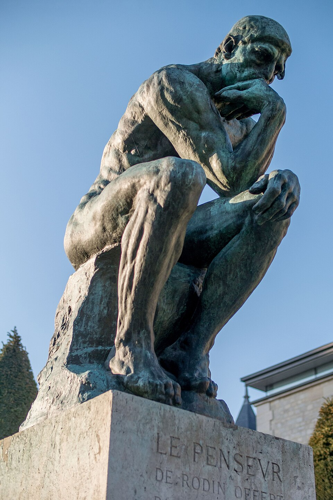

Description
Le Penseur (initialement intitulé Le Poète) est un des chefs-d'œuvre emblématiques d'Auguste Rodin.
Cette sculpture en bronze à patine d'un penseur est initialement créée à Paris en 1880, en tant qu'élément de La Porte de l'Enfer de Rodin, inspirée de la Divine Comédie du xive siècle, du poète penseur philosophe italien Dante Alighieri. Devenue une œuvre monumentale indépendante en 1888, moulée en de nombreux exemplaires dans le monde, cette sculpture est entre autres une représentation allégorique de la philosophie existentielle, de l’introspection humaine, et de l’acte intellectuel de penser.
Cette œuvre d'art académique fait partie d'une importante commande de l'État français pour le musée des Arts décoratifs de Paris, pour laquelle Auguste Rodin créé La Porte de l'Enfer, représentation artistique de la porte monumentale de l'Enfer (Divine Comédie) de la Divine Comédie, du poète penseur philosophe italien Dante Alighieri (également inspirée entre autres du Jugement dernier de Michel-Ange, de la chapelle Sixtine du Vatican, ou de la Porte du Paradis de Lorenzo Ghiberti, du baptistère Saint-Jean de Florence). Le boxeur Jean Baud servit de modèle.
Chacune des près de deux cents figures de cette oeuvre monumentale (avec Les Trois Ombres) représente les personnages principaux du poème épique de Dante, avec, au sommet des deux battants, Le Poète ou Le Penseur (Dante, ou Rodin) au corps et à l'âme puissants de réalisme et de symbolisme, qui observe et médite du haut des portes des cercles de l'Enfer (et du Paradis (Divine Comédie)) les profondeurs du monde des damnés de son poème métaphorique et allégorique, avec l'inscription « abandonnez l'espérance, vous qui entrez ici ».
Médicis (it) (Il Pensieroso) de Michel-Ange, de la basilique San Lorenzo de Florence, et d'Ugolin entouré de ses quatre enfants, de Jean-Baptiste Carpeaux, du musée d'Orsay de Paris. Le modelage original, réalisé en plâtre vers 1880 (de 71 cm de haut par 37 cm de large et 57,5 cm de profondeur) est exposé indépendamment pour la première fois en 1888 à Copenhague au Danemark, alors renommé « Le Penseur ».